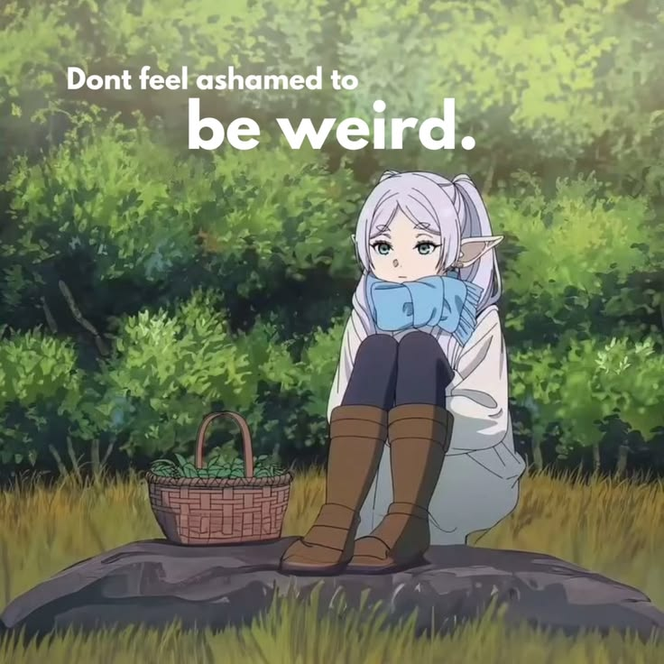

Fririen
Critique: The inclusion of the bold, sans-serif text overlay across the top left quadrant severely compromises the artistic integrity of the original animation frame.
The hard white typography creates an artificial barrier that fights against the organic, painterly quality of the background foliage.
Beyond the text, the lower plane featuring the rock and grass feels somewhat flat, lacking the directional shadows needed to firmly anchor Frieren’s boots to the stone.
A slight boost in environmental contrast—such as deeper cast shadows underneath the rock—would have added much-needed ground weight to the middle ground.
Verdict: Despite the text overlay, the artwork radiates a serene, contemplative charm that encapsulates the soul of Frieren: Beyond Journey's End. .
The soft, pastel palette of greens, light earth tones, and muted blues creates a cozy, timeless atmosphere.
Frieren’s relaxed posture—curled up in her winter scarf on a mossy boulder with a woven basket of herbs beside her—speaks volumes about her unhurried, century-long perspective on life.
Her calm, slightly bemused expression captures her gentle detachment from human anxieties.
It turns a simple moment of resting in the woods into a warm, poetic reflection on slowing down, embracing one's personal quirks, and finding peace in the quiet spaces of the world.
Rating: 8.4 / 10